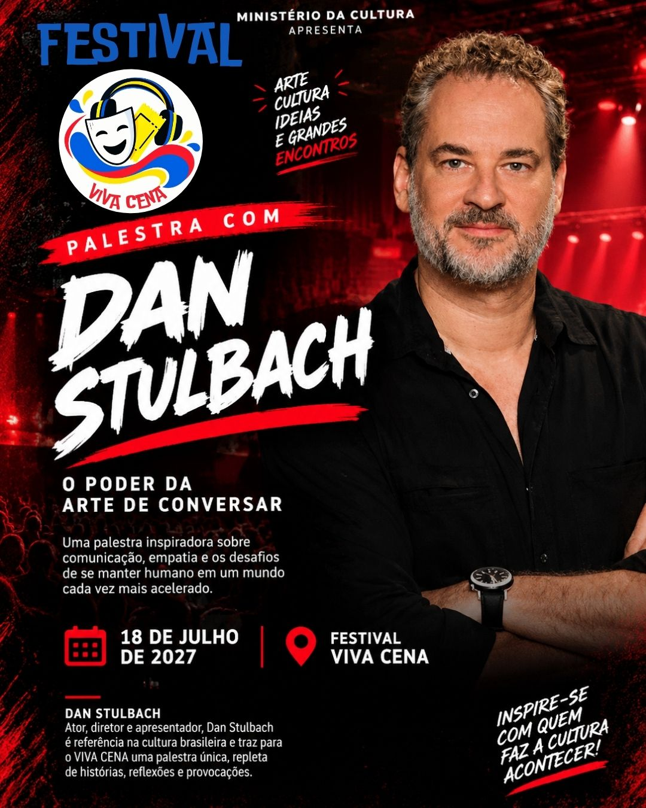
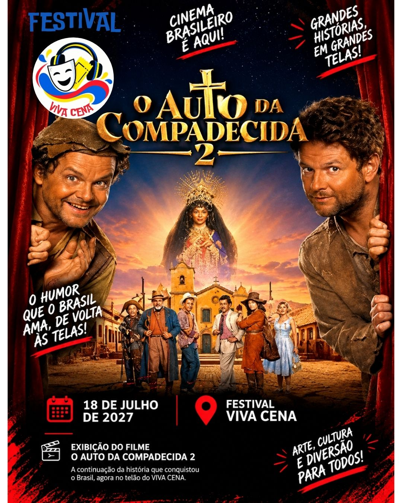

Atrações de Cinema

Palestra com Dan Stulbach
17:00h - O poder da arte de conversar e se reinventar.

O Auto da Compadecida 2
20:00h - O aguardado retorno de João Grilo e Chicó!
Música, Teatro e Cinema nos dias 16, 17 e 18 de julho de 2027.

17:00h - O poder da arte de conversar e se reinventar.

20:00h - O aguardado retorno de João Grilo e Chicó!